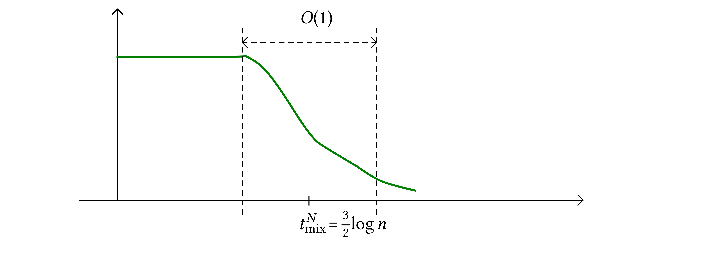

SRQ Seminar notes 20181029 Jara
Entropy approach to fluctuations of interacting particle systems
Reader can refer to the paper “Non-Equilibrium fluctuations of interacting particle systems” (written jointly with Octavio Menezes, on the arXiv).
Continuous time, finite state (state space \(\Omega\)), Markov chain \((x_t)_{t \geqslant 0}\).
\(\bar{\nu}\) a (probability) reference measure \(\bar{\nu} (x) > 0\) for all \(x \in \Omega\). \((\mu_t)_{t \geqslant 0}\) trajectory of (probability) reference measures,
\(L_t^{\ast}\) adjoint of \(L\) wrt. \(\mu_t\).
Theorem
Note that \(L^{\ast}_t \mathbb{1}- \partial_t \log \psi_t = 0\) iff the sequence \(\mu_t\) solves the Fokker–Planck equation, it measures how far our reference measures \((\mu_t)_t\) are to be the actual law of our Markov process.
This is a very general inequality. For diffusions this inequality is an identity.
Yau's idea for hydrodynamic limit is to guess a good \((\mu_t)_t\) for which \(L^{\ast}_t \mathbb{1}- \partial_t \log \psi_t\) is “small”.
A new inequality. Take a function \(V : [0, T] \times \Omega \rightarrow \mathbb{R}\) and consider
which is an additive functional of the Markov chain. We call it also an “observable”. We are interested in the behaviour of the integral for large \(T\).
Theorem
where the supremum is over any density \(f\) for \(\mu_t\).
Interesting fact is that the structure of the r.h.s. is similar to the structure of Yau's inequality.
If you know how to bound integrals of arbitrary functions like \(\int (L^{\ast}_t \mathbb{1}- \partial_t \log \psi_t) f_t \mathrm{d} \mu_t\) in terms of \(\int \Gamma \sqrt{f} \mathrm{d} \mu_t\) then this can be applied also to the exponential moments for observables.
Two examples to which to apply these inequalities:
Exclusion process with boundary conditions.
Mean–field spin systems, in particular (Ben-Hamou–Peres): we have particles on \(\mathbb{Z}\) at rate \(1\) we choose a site \(x\) and a site \(y\) and we change the content \(\sigma (x)\) to \(\sigma (x) + \sigma (y)\) modulo \(2\).
Mean-field spin system
(work in progress with F. Hernández (Bogotá))
Function \(F : \Omega \rightarrow [0, \infty]\) smooth, generator:
The measure \(\bar{\nu} = \otimes_x \operatorname{Bernoulli} (1 / 2)\) is invariant for this system (by detailed balance). A natural question is to describe the convergence of this model to equilibrium.
Ben-Hamou–Peres consider the case \(F (u) = u\). We focus now on this example:
The Bernoulli measure is not ergodic, there is another ergodic component where every site is empty. So we consider the state space where we have at least one particle. There the dynamics is well defined.
Let \((\eta^N (t))_{t \geqslant 0}\) chain generated by \(L\), we take \(\eta^N (0)\) with at least one particle. Define the distance to equilibrium:
Ben-Hamou–Peres prove a cutoff phenomenon.

We will prove that there exists a function \(G\) looking like the green curve such that:
Ideas:
a) If \(\pi^N_0 \rightarrow x_0 > 0\) then
where
This is the law of large numbers.
b) If in addition
then we have a CLT:
where
These two results tell us that the number of particles is well approximated by the Gaussian with mean \(N \varphi_t\) and variance \(N \xi_t^2\).
In general if \(F (0) \neq 0\) then
If \(F (0) = 0\) and \(F' (0) \neq 0\) then
Let us take
If we compute
l.o.t.\(=\) lower order terms, lots of terms. At this point Yau's inequality already tells us something meaningful. Note that by CLT
should be approx. Gaussian, actually is the square of a subGaussian (the square exponential moments exists) random variable under \(\mu_t\). And since \(\mu_t\) is explicit we have
for small \(\theta\). Now
and \((1 - 2 \varphi_t) \lesssim e^{- t}\).
where \(f (t) \rightarrow 0\) as \(t \rightarrow \infty\).
If \(\operatorname{Law} (\eta^N (t_0))\) is close to \(\mu_{t_0}\) (in relative entropy), then \(\operatorname{Law} (\eta^N (t))\) is close to \(\mu_t\) for all \(t \geqslant t_0\) uniformly in \(N\).
The CLT tells us something about the distribution of \(\operatorname{Law} (\eta^N (t_0))\). In particular it tells us that if we have convergence in law then there is a coupling which converge in probability. The same is true for two different sequences of random variables which can be coupled to remain at small distance.
\(\pi^N_{t_0}\) is at distance \(\varepsilon / N^{1 / 2}\) of \(\operatorname{Binom} (N, \varphi_{t_0})\) if \(t_0\) is large.
We use entropy twice: one for large time to be close to product measure forever, and the other to prove that strating from deterministic we are, after small time, near a product measure.
[I could not follow the final part of this discussion]